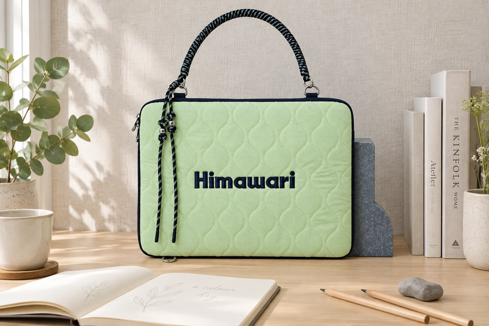
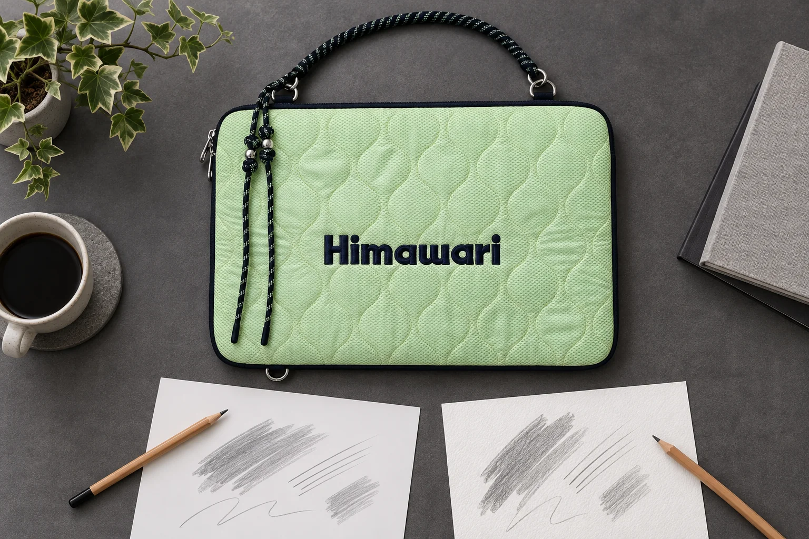

연필의 H와 B, 선의 촉감이 달라지는 이유

연필 몸통에 적힌 2B는 선의 폭까지 정해주지는 않습니다. 뾰족한 끝으로 작은 윤곽을 긋다가 같은 자루를 눕혀 면을 채우면, 종이에 닿는 심의 부분부터 달라집니다. 선이 마음처럼 나오지 않을 때 연필 번호만 바꾸면 원인을 놓칠 수 있습니다. 지금 쥔 자루의 경도와 끝 모양, 실제 종이에 남은 흔적을 함께 보면 조정할 곳을 고르기 쉽습니다.
연필을 움직일 때 손에 걸리는 느낌과 종이 위에 보이는 선은 따로 살펴볼 수 있습니다. 손에는 매끄럽게 느껴져도 선 속의 흰 틈이 눈에 띌 수 있고, 선이 진해 보여도 폭이 넓어진 결과인지 따로 볼 필요가 있습니다.
H와 B는 심의 경도를 읽는 표시
스테들러의 연필 안내는 H를 Hard, B를 Black, HB를 Hard Black으로 풀이합니다. H 계열은 단단한 심, B 계열은 부드러운 심을 가리키며, 앞의 숫자가 커질수록 H는 더 단단해지고 B는 더 부드러워진다고 설명합니다. HB는 그 사이에서 읽을 기준이 됩니다. 2B의 2를 HB보다 두 배 진하다는 뜻으로 읽지는 않습니다.
같은 안내에 따르면 심에 들어가는 점토는 형태와 강도를 잡는 결합재이며, 흑연은 종이 위의 은빛 검정색을 냅니다. 점토의 비율이 높으면 더 단단해지고, 흑연의 비율이 높으면 더 부드럽고 검어집니다. 연필 번호가 달라질 때 생기는 차이를 이해하는 재료 쪽 설명입니다.
다만 이 표시만 보고 다른 브랜드나 서로 다른 제품군의 HB가 정확히 같은 선을 낸다고 결론 내릴 수는 없습니다. 내 종이에서 경도의 방향을 알아보려면 우선 같은 제품군의 HB와 2B처럼 가까운 두 자루를 비교하는 편이 읽기 쉽습니다. 이미 가진 연필이 한 자루뿐이라면 경도 비교를 건너뛰고 끝의 닿는 방식부터 살펴도 됩니다.
심 끝이 닿는 면과 종이의 결
가는 선을 볼 때는 깎인 심의 끝을, 넓은 명암을 볼 때는 옆면을 사용할 수 있습니다. 캔손의 1557 종이 드로잉 안내도 연필을 눕혀 더 넓은 심 표면으로 명암을 넣는 방법을 소개합니다. 경도를 그대로 두어도 접촉하는 면을 바꾸어 다른 흔적을 만들 수 있다는 예입니다.
예를 들어 작은 잎을 그린다고 해봅시다. 잎맥을 가늘게 남기는 부분과 잎 아래의 그림자를 넓게 넣는 부분은 필요한 흔적이 다릅니다. 잎맥이 두꺼워졌다면 먼저 심 끝을 보고, 그림자에 가느다란 줄만 생긴다면 닿는 부분을 살펴볼 수 있습니다. 두 경우를 모두 연필이 너무 진하거나 너무 연해서 생긴 일로 묶으면 바꾸어볼 동작도 흐려집니다.
연필을 쓰는 동안에는 끝의 상태도 변합니다. 스테들러는 쓰거나 칠할 때 마찰로 끝이 무뎌진다고 설명합니다. 첫 줄과 한참 뒤의 줄이 달라 보인다면 같은 번호였다는 사실과 함께 그 사이에 얼마나 썼는지, 다시 깎았는지도 떠올려보세요. 처음에는 작은 점이 닿았지만 나중에는 닳은 면이 닿았는지 확인할 수 있습니다.

손힘을 더하는 것과 심의 옆면을 쓰는 일도 구분합니다. 캔손의 같은 안내는 나중에 지울 밑선을 가볍게 긋도록 권합니다. 비교할 때는 편하게 선이 남는 힘에서 시작하고, 조금 더 눌러본 자리를 따로 둡니다. 원하는 진하기를 얻으려고 계속 세게 누르기보다 경도나 겹친 횟수 가운데 무엇을 바꾸어볼지 고르면 됩니다. 손으로 한 비교에서 압력이 정확히 같았다고 주장할 필요는 없습니다.
종이의 질감은 연필과 만나는 다른 쪽 면입니다. 캔손의 드로잉 종이 선택 안내는 흑연 연필에 재료가 쉽게 펴질 수 있는 고운 결의 표면을 제안합니다. 또 Colorline 제품 설명은 같은 종이의 양면을 매끄러운 면과 결이 있는 면으로 구분하고, 결이 있는 쪽을 연필 등에 맞는 면으로 소개합니다. 종이 이름을 알더라도 어느 면에 그렸는지까지 보아야 할 사례입니다.
이 안내를 모든 종이의 앞면과 뒷면이 다르다는 뜻으로 넓히지는 않습니다. 지금 쓰는 종이에서 작은 선을 그어 보고, 선의 가장자리가 얼마나 이어지는지와 칠한 면에 바탕의 결이 보이는지 살펴보세요. 흰 틈이 남은 부분을 없애고 싶은지, 그 결을 그림에 남기고 싶은지에 따라 선택도 달라집니다. 결이 도드라진다는 관찰과 그림에 어울리지 않는다는 평가는 별개의 문장입니다.
같은 종이에서 한 조건씩 비교하기
오늘 쓸 종이의 여백에 짧은 가로선 몇 개를 나란히 그어봅니다. 경도를 비교한다면 같은 제품군 두 자루의 끝을 비슷한 모양으로 준비하고, 잡는 각도와 선 길이를 가능한 한 비슷하게 둡니다. 두 선을 보고 진하기뿐 아니라 폭도 따로 적어보세요. 짙은 자국이 더 넓게 남은 것인지, 비슷한 폭 안에서 더 어둡게 보이는 것인지 구분하면 다음 선택이 구체적이 됩니다.
가령 2B의 선이 HB보다 넓게 나왔다면 바로 경도의 효과라고 결론 내리지 않습니다. 2B 끝이 먼저 닳았거나 더 눕혀 잡았는지 살핀 뒤, 작은 빈자리에서 다시 그어볼 수 있습니다. 비슷하게 맞추려 했지만 손힘이 달랐다면 그 비교의 한계로 남깁니다. 이 시험은 경도표를 검증하는 실험이 아니라 내가 사용할 조합을 살펴보는 방법입니다.
접촉 면을 비교할 차례에는 연필을 한 자루로 고정합니다. 끝으로 그은 선 옆에 옆면으로 짧게 칠한 자리를 두고, 같은 그림의 어느 부분에 각각 쓸지 생각해보세요. 이어서 겹침을 보고 싶다면 새 칸에 한 번 지나간 자리와 가볍게 덧그은 자리를 둡니다. 힘을 더 준 결과와 여러 번 겹친 결과를 한 칸에 섞지 않으면 내가 어떤 동작을 택했는지 알 수 있습니다.
종이를 바꾸어 볼 때는 연필을 유지하고 같은 받침 위에서 그려봅니다. 종이 색까지 다르면 진하기가 다르게 보이는 이유를 질감 하나로 좁히기 어렵습니다. 이름을 아는 종이는 제품명과 사용한 면을 적고, 모르는 종이는 '오늘 노트의 뒷면'처럼 실제 대상을 다시 찾을 말로 남기면 됩니다. 모든 종이를 순위로 매길 필요 없이 오늘의 가는 선과 넓은 면에 어느 쪽을 쓸지 고르면 충분합니다.

이 글에 함께 소개한 Himawari No.2513 민트는 노트와 연필을 둔 작업 장면의 소품입니다. 제품의 색상과 형태는 실제 상품 사진에서 살펴볼 수 있습니다. 선을 비교할 때는 가방을 옆에 두고 종이를 같은 받침에 펼쳐, 손에 쥔 연필과 종이가 만나는 자리에 집중해보세요.
작은 창문을 그린다면 창틀에 쓸 선 한 쌍과 유리 아래의 그림자 한 칸만 시험해도 됩니다. 그 결과에서 끝을 다시 깎을지, 연필을 눕힐지, 다른 경도를 쓸지 하나를 골라 실제 그림에 옮깁니다. 다음 부분에서도 선이 달라지면 처음 만든 자국과 끝 모양을 다시 대조할 수 있습니다.